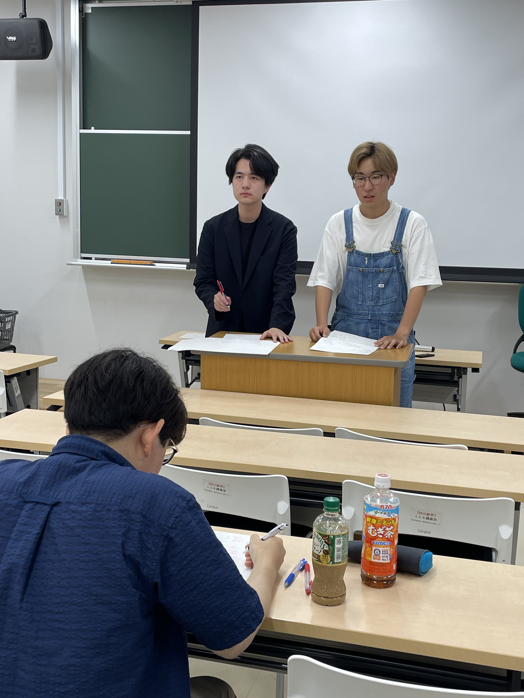

学術局：Debate Network
ディベートとは？
私達、Debate Networkが行っているのは競技ディベートと呼ばれるディベートです。 これは第三者を肯定・否定の2つのサイドに分かれて説得し、どちらがより説得力があったかを競うものです。以下の音声は、新歓での説明です。
大会記録
- 大会名称
- Welcome cup 2024
- 概要
- 大学でディベートを始めた初心者向けの大会。私は「カブトムシ」というチーム名で後輩と共に出場した。
- 試合中の写真
- 
- 大会結果
- 私達、Debate Networkからは2チーム出場した。我々「カブトムシ」は惜しくも予選3位という結果になり、決勝に進むことが出来なかった。しかし、「D-net焼肉ラバーズ」は決勝に進み、見事優勝を果たした。
対戦表
- 予選
- 第1試合:「本議会は大学が学生に起業を推奨する活動を禁止する」
- カブトムシ VS 詭弁論部
- 闘争心 VS ホワイトモカとうさぎ
- スタバキラキラJD砲とその方向音痴砲手🍤 VS D-Net 焼肉ラバーズ
- スーパーTAKAHASHI VS アングリープラネタリアン
- ぐっぴぃのうどん VS 駆け込み訴え
- 第2試合:「本議会は美容整形手術を禁止する」
- 駆け込み訴え VS カブトムシ
- 詭弁論部 VS 闘争心
- D-Net 焼肉ラバーズ VS ぐっぴぃのうどん
- ホワイトモカとうさぎ VS スーパーTAKAHASHI
- アングリープラネタリアン VS スタバキラキラJD砲とその方向音痴砲手🍤
- 第3試合:「発展途上国は、大学を卒業した国民に出身国で一定期間以上働くことを義務づけるべきである」
- D-Net 焼肉ラバーズ VS カブトムシ
- スタバキラキラJD砲とその方向音痴砲手🍤 VS ぐっぴぃのうどん
- 駆け込み訴え VS アングリープラネタリアン
- スーパーTAKAHASHI VS 闘争心
- ホワイトモカとうさぎ VS 詭弁論部
- 第1試合:「本議会は大学が学生に起業を推奨する活動を禁止する」
- 決勝
- 決勝:「有名大学への進学が成功の必要条件であるという考えが広く支持される社会は、そうでない社会よりも望ましい」
- D-Net 焼肉ラバーズ スタバキラキラJD砲とその方向音痴砲手🍤
- 決勝:「有名大学への進学が成功の必要条件であるという考えが広く支持される社会は、そうでない社会よりも望ましい」
予選順位
- スタバキラキラJD砲とその方向音痴砲手🍤
- D-Net 焼肉ラバーズ
- カブトムシ
- ホワイトモカとうさぎ
- 闘争心
- ぐっぴぃのうどん
- スーパーTAKAHASHI
- アングリープラネタリアン
- 詭弁論部
- 駆け込み訴え